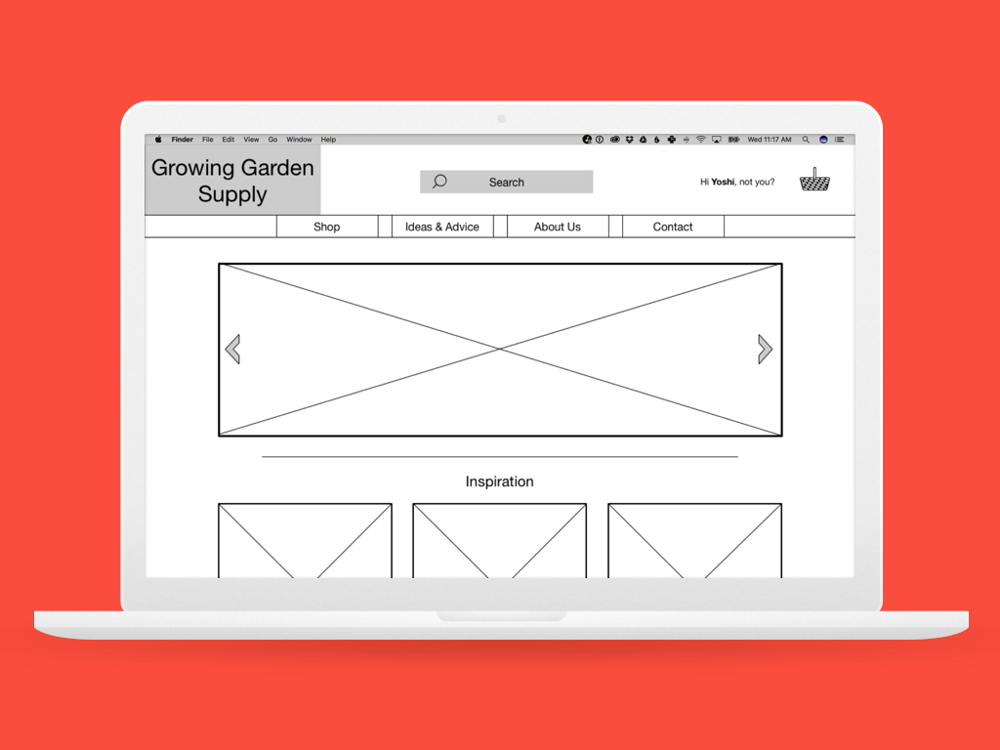
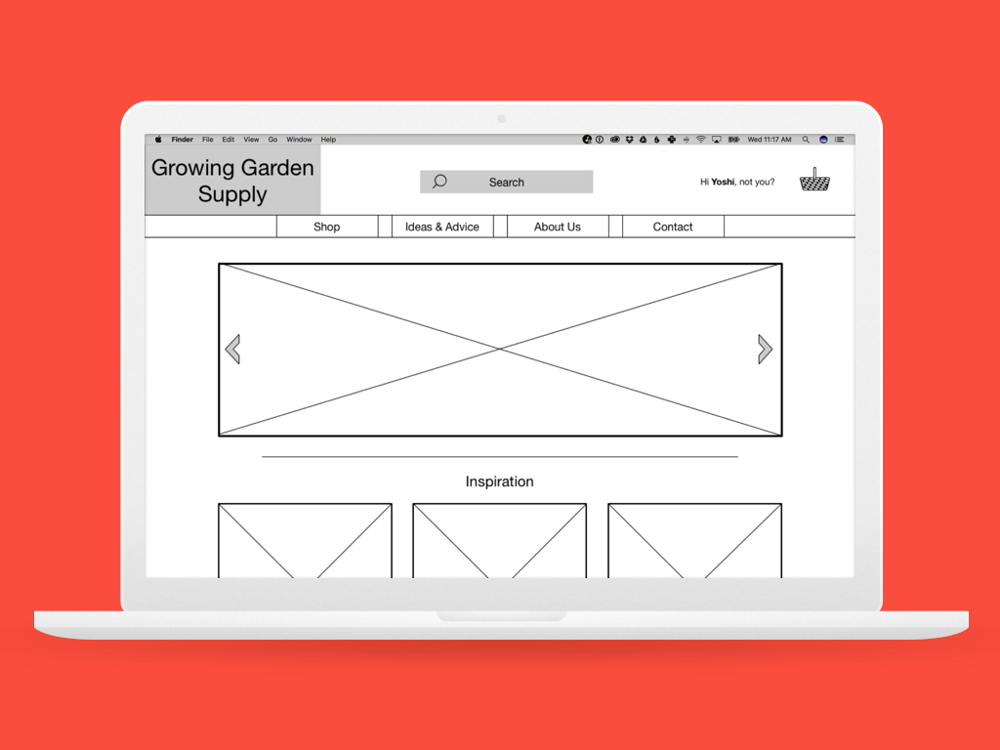

Through my past work and travels I have developed a desire to learn and explore more about human emotions and how they can be accessed to create beautiful and functional products, and experiences, through a user-centered design process.
I'm an easy-going and approachable person and love working closely with others. One of the most exciting parts of the design process for me is the sharing of ideas. I want to listen and learn from one another and build on concepts and designs together.
One of things that attracted me to User Experience Design is the variety in the process. The ability to research, design, create, iterate and test is something that I take great joy in. I look forward to continuing to learn, develop and hone my skills with each new project I take on.

 
